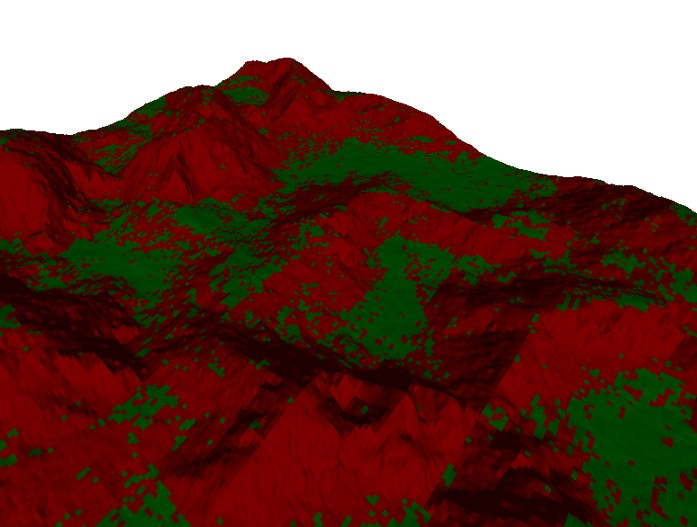

L'aspetto del terreno è probabilmente quello che più di tutti contribuisce a creare un' ambientazione “desertica” dalla quale il gioco prende il nome.
Il terreno è anche l'elemento che ha subito maggiori cambiamenti e revisioni nel corso della stesura del progetto e che più ne ha condizionato l'aspetto finale.
Sin dalle prime versioni del progetto è stato scelto di avvalersi di un terreno che non fosse “cablato” direttamente nel codice del programma ma che venisse in qualche modo caricato da un file per poter eventualmente giocare con ambienti differenti e con caratteristiche facilmente controllabili e modificabili. Infatti, l'idea iniziale (più vicina al gioco SimCopter dal quale il progetto trae ispirazione) era quella di utilizzare il versatile sistema di caricamento materiali e modelli per dare vita a una sorta di piccola città, con un terreno organizzato come una matrice bidimensionale di caselle (tiles o slot) alle quali potessero essere applicate texture di strade, cemento o erba per dare una grossolana idea di ambientazione cittadina. Su vari slot sarebbero stati posizionati i modelli di alcuni edifici (case, palazzi, ospedali..) e si sarebbe dovuto implementare un semplice sistema di collisioni basato su parallelepipedi per gestire gli urti.
In un primo
prototipo, il terreno era quindi costituito da una scacchiera
completamente piatta di tessere. Ogni “slot” aveva una texture
associata e poteva essere sormontata da un modello .obj qualsiasi.
Per descrivere e caricare una mappa si sarebbero dovute utilizzare le
tre componenti R, G; B di un'immagine: gli 8 bit della componente
rossa avrebbero indicato la texture da usare, quelli della componente
verde il modello da caricare e i bit del blu restavano dedicati per
parametri accessori.
Purtroppo, la realizzazione di questa idea si
è rivelata presto troppo onerosa: le texture per le diverse tiles
erano difficili da trovare e richiedevano tempo per essere adattate,
i pochi modelli gratuiti messi a disposizione erano di scarsa qualità
e richiedevano lunghe operazioni di messa a punto, la mappa era
difficile da compilare senza tool appositi e le poche prove
realizzate mostravano un'ambientazione decisamente spoglia e
innaturale. Oltretutto i modelli degli edifici risultavano spesso
troppo complessi e dettagliati e comportavano un calo delle
performance notevole e ingiustificato, visto che la scena veniva
osservata dall'alto dell'elicottero per la maggior parte del tempo.
Dopo vari tentativi si è quindi deciso di implementare una tipologia di terreno più semplice da generare, priva di mesh di decorazione (l'idea di utilizzare modelli di alberi (o forse cactus?) come abbellimenti è stata scartata per mancanza di tempo) e dall'aspetto meno monotono. L'idea finale prevede ancora un terreno organizzato a matrice bidimensionale di slot, ma la svolta è stata quella di avvalersi di un campo scalare (facilmente ricavabile da una componente colore di un'immagine) che definisce per ogni tessera l'altezza variabile dei suoi quattro vertici.
La struttura che contiene tutte le informazioni necessarie alla gestione del terreno è chiamata Terrain, viene definita in terrain.h ed è riportata nella figura a fianco. I byte letti dal file di mappa (un'immagine .tga) vengono memorizzati nel campo hdata (height data) dalla procedura loadTerrain(). Questa legge la componente blu del file specificato e ne riversa gli 8 bit nella posizione corrispondente di tale vettore. Inoltre estrae dal documento due informazioni accessorie: la posizione iniziale dell'elicottero e la posizione del modello di un oggetto 3D simile a un tabellone pubblicitario (billboard) con l'immagine personale dell'autore. Questi parametri vengono memorizzati nei campi startPos e creditPos. Per ricavare queste informazioni si legge la componente rossa dell'immagine alla ricerca di due codici esadecimali predefiniti: 0xff per indicare la posizione iniziale e 0xaa per indicare la posizione del tabellone.
Una volta caricato il terreno è pronto per essere “compilato” ovvero convertito in una mesh tridimensionale rappresentabile da OpenGL. Questa procedura è svolta dalla funzione compileTerrain() e la procedura seguita è schematizzata nella figura sottostante.
Seguendo
un'immaginaria lettura dei pixel di immagine da sinistra verso
destra, si considerano blocchi di quattro pixel adiacenti disposti
come il riquadro blu della figura. Da questo riquadro (ottenuto
leggendo opportuni indici del vettore hdata)
verranno estratte le informazioni sulle rispettive altezze dei
quattro vertici di una “tessera” del terreno. In breve: tanto più
un pixel è saturo (quindi con una componente blu vicina a 0xff)
tanto più elevata sarà l'altezza del vertice associato. Da ogni
riquadro si generano due triangoli con un lato in comune che formano
il tassello di terreno così ottenuto. La lettura prosegue spostando
a destra il riquadro di un pixel in modo che – per evitare buchi o
strappi del terreno – il tassello successivo abbia i suoi due
vertici di sinistra perfettamente adiacenti ai due di destra del
blocco precedente e analogamente verso la direzione di profondità
della figura (che corrisponderà alla z in coordinate di scena).
Ovviamente, una volta elaborata la posizione di ciascuno dei quattro
vertici dello slot le due normali ai vertici dei due triangoli sono
facilmente ricavabili con semplici operazioni di prodotto
vettoriale.
Resta da definire la dimensione dei quattro lati che
formano l'ipotetica base del riquadro e che definiscono le coordinate
x e z dei quattro vertici appena ricavati. Per semplice convenzione,
si è stabilito che tale base è data da un quadrato di lato
slotSize,
uno dei parametri forniti in ingresso alla funzione compileTerrain().
Al crescere di questo parametro si ottiene un terreno di estensione
maggiore ma dall'aspetto sempre più “seghettato” (i triangoli
che compongono la superficie del terreno diventano molto estesi e si
perde l'idea di continuità del paesaggio).
Un altro parametro
cruciale che deve essere fornito alla procedura di compilazione è
l'altezza massima consentita per il terreno: è facile infatti
immaginare che i 256 valori rappresentabili dagli 8 bit di una
componente di colore di un'immagine siano piuttosto scarsi per
quantificare l'altezza dei vertici (un valore in virgola mobile e
quindi continuo in prima approssimazione). Si specifica pertanto il
parametro maxHeight che rappresenta l'altezza massima raggiunta (in
unità di scena) da un vertice completamente saturo (con componente
blu pari a 0xff). Il valore minimo è fissato a 0 per convenzione.
Il
problema della scarsa quantità di valori a disposizione non è
completamente risolto: il terreno può assumere dei valori di altezza
in un insieme finito di valori (256 appunto), tuttavia è possibile
“spalmare” questi valori in un intervallo continuo e
parametrizzabile.
Compilare una mappa con simili caratteristiche potrebbe risultare un compito estremamente arduo e in effetti – escludendo morfologie semplicissime – è necessario ricorrere a dei tool di supporto. Il software utilizzato per realizzare i vari terreni di gioco è Terragen, un software professionale (disponibile anche in versioni gratuite con funzionalità ridotte) che permette la generazione di terreni particolarmente realistici con parametri anche molto sofisticati. I file .ter prodotti da Terragen possono essere poi trattati con un qualsiasi programma GIS (Geographical Information System) al fine di ricavarne una mappa in toni di grigio, dalla quale si possono poi escludere le componenti R e G e aggiungere i due codici per le posizioni dell'elicottero e del tabellone. Per questo passaggio è stato utilizzato il software gratuito LandSerf e il celebre Gimp.
È interessante notare come le due operazioni di caricamento e compilazione del terreno siano mantenute concettualmente distinte e vengono svolte in due fasi separate. Questo sottolinea il fatto che da un singolo file di mappa si possono ricavare terreni anche molto diversi tra loro in funzione dei due parametri slotSize e maxHeight appena descritti.
Per sapere se l'elicottero sta toccando una cassa o il cesto di una mongolfiera è sufficiente controllare se la distanza tra i due oggetti è inferiore a una certa soglia critica. Per gestire gli urti contro il terreno è necessario un meccanismo leggermente più sofisticato.
Visto
che lo scopo principale del progetto non è quello di fornire una
simulazione fisica di qualità, la strategia utilizzata per il
controllo delle collisioni è semplice e grossolana ma
sufficientemente efficace. Anzitutto, nella fase di compilazione del
terreno, la struttura Terrain
viene
arricchita con delle informazioni utili a tale scopo: la variabile
groundHeight
tiene
traccia della media delle altezze dei quattro vertici che
costituiscono ogni slot del terreno in modo da avere a disposizione
una stima della posizione del centro dello slot e della sua quota.
Una seconda importante informazione che viene ricavata è
groundNormal,
ovvero la media tra le normali dei due triangoli che compongono ogni
slot. Questo vettore viene utilizzato per imprimere una direzione
contraria al terreno in caso l'elicottero si trovi a sbattere contro
lo slot.
Durante la simulazione, per controllare gli urti contro
il terreno, viene costantemente tenuta traccia dello slot che si
trova immediatamente sotto all'elicottero seguendo una direzione
perpendicolare al piano XZ. Se l'altezza del velivolo è troppo
vicina (o comunque inferiore) a quella dello slot (groundHeight)
significa che esso si sta scontrando con il suolo. A questo punto
viene impressa una spinta nella direzione di groundNormal
con
una forza proporzionale alla velocità dell'elicottero al momento
dell'urto.
Questo metodo non è assolutamente esatto ed è il
frutto di molteplici approssimazioni e semplificazioni, tuttavia
consente di avere un buon risultato con poco sforzo.
Per gestire invece l'atterraggio dell'elicottero è sufficiente avvalersi del flag slotFlat che stabilisce se uno slot consente o meno l'atterraggio. Per valutare tale condizione viene effettuato al momento della compilazione del terreno un duplice test schematizzato in figura: nel primo (flat test) viene verificato che lo slot sia sufficientemente “piatto” ovvero che le normali dei due triangoli non divergano troppo tra di loro (si vede cioè se il terreno non è troppo “dissestato” in quel punto); nel secondo (steep test) si controlla che la normale stimata al piano (groundNormal) formi un angolo sufficientemente piccolo con l'asse y (ovvero si controlla che il terreno non sia troppo pendente). Se entrambi i test vengono superati il terreno è giudicato adeguato per un atterraggio. La figura in basso mostra a titolo esemplificativo il risultato di questo test su un terreno di prova: gli slot colorati di rosso non consentono in nessun caso un atterraggio, quelli in verde possono concederlo se l'elicottero si appoggia delicatamente su di essi.

Come
ultima considerazione si vuole fare notare come la gestione di una
mappa di grandi dimensioni affligga irrimediabilmente le prestazioni
della simulazione. Ad esempio, se si utilizza come mappa un'immagine
di 256x256 pixel, si avranno 255*255 = 65˙025
slot, pari a 130˙050
triangoli soltanto per rappresentare il terreno di gioco!